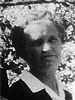
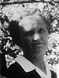
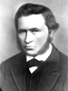

Niels and Josephine Sorensen ChristensenFamily Group
Home
Histories
Charts
Photos
Maps
Restricted
News
Info
Contact
 symbol is a link to a history,
symbol is a link to a history,  a source, and the chart
a source, and the chart  symbol is a link to a family group chart.)
symbol is a link to a family group chart.)|
Anthony Christensen and Castina Lovell |
--> |    |
Niels Hyrum Christensen Born 23 Jan 1882 Oak City, Millard, Utah Died 11 Feb 1920 Hinckley, Millard, Utah Josephine Sorensen Born 7 Feb 1883 Koosharem, Sevier, Utah Died 15 Aug 1955 Rock Springs, Sweetwater, WY Married 8 Feb 1906 Manti, Sanpete, Utah | |
|  |
Hans Sorensen and Mathilda Torgersen Evensen |
| * |
Owen Sorensen Christensen Born 12 Nov 1906 Aurora, Sevier, Utah Died 1 Mar 1908 Hinckley, Millard, Utah The 1st child of Niels Hyrum Christensen and Josephine Sorensen |
 |
Arla Dean Christensen Born 2 Dec 1908 Hinckley, Millard, Utah Died 18 Jun 1984 Bellflower, Los Angeles, CA Married Leroy Tovey Ashby 4 Sep 1936 Salt Lake City, Salt Lake, Utah The 2nd child of Niels Hyrum Christensen and Josephine Sorensen |
|
Melda Christensen Born 4 Oct 1910 Hinckley, Millard, Utah Died 2 Oct 1989 Salt Lake City, Salt Lake, Utah Married George Ernest Clark 31 Jul 1942 Salt Lake City, Salt Lake, Utah The 3rd child of Niels Hyrum Christensen and Josephine Sorensen |
|
Niels La Verl Christensen Born 6 Dec 1913 Hinckley, Millard, Utah Died 6 May 1989 Provo, Utah, Utah Married Faye Erva Van Wagenen 5 May 1938 Salt Lake City, Salt Lake, Utah The 4th child of Niels Hyrum Christensen and Josephine Sorensen |
|
Vernell Christensen Born 18 Mar 1918 Hinckley, Millard, UT Died 25 Jun 1951 Salt Lake City, Salt Lake, Utah Married Harold Fay Shields 8 Mar 1944 Salt Lake City, Salt Lake, Utah The 5th child of Niels Hyrum Christensen and Josephine Sorensen |
|
Bernice Christensen Born 10 Jun 1919 Hinckley, Millard, Utah Died 4 Jan 2000 Married Walter Tovey Ashby 23 Mar 1944 The 6th child of Niels Hyrum Christensen and Josephine Sorensen |